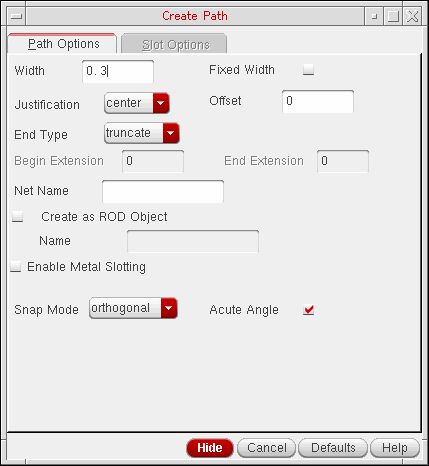
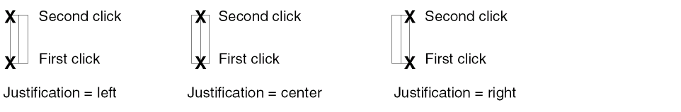
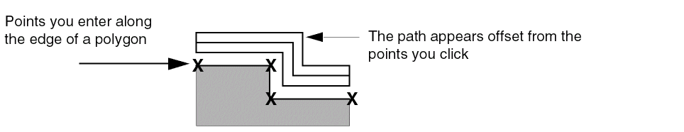
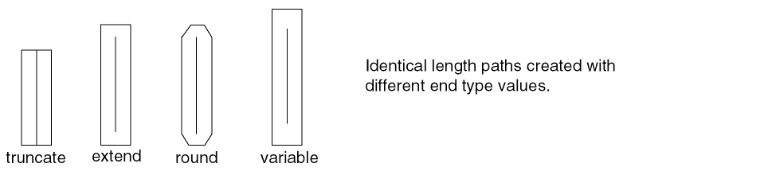
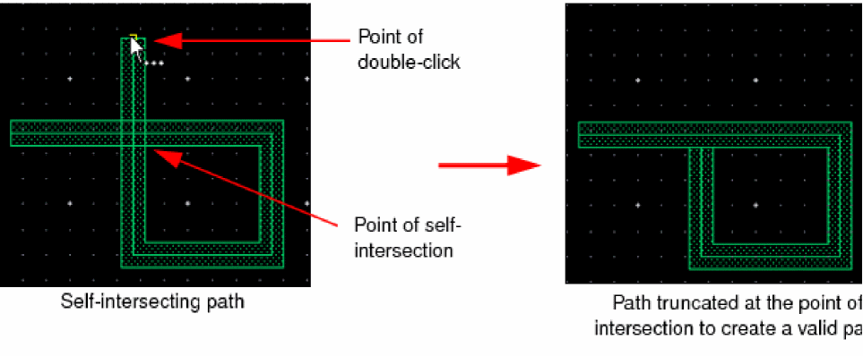
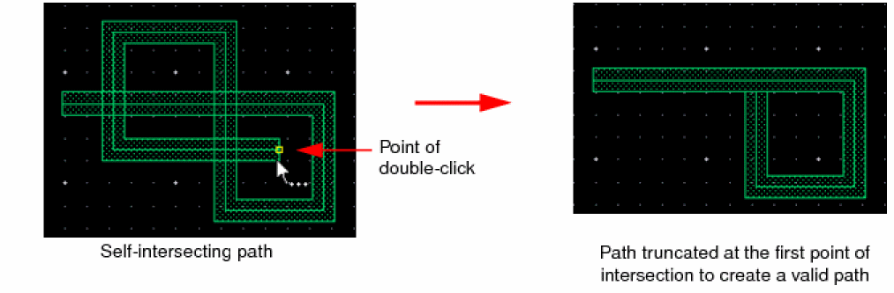

Creating a Path
- In the layout window, from the Layers panel, select the layer on which you want to create a path.
- Choose Create – Shape – Path.
-
Press
F3to open the Create Path form.
 -
On the Path Options tab, specify the Width for the path.
The default path width is theminWidthfor the entry layer defined in the technology file. -
Select the Fixed Width check box if you want a fixed width for the path.
If this check box is selected, the specified width is applied to all the segments of the path, even when you change layers. -
From Justification, select the edge of the path you want to offset.
The path justification setting controls where you can enter the points—along the centerline or along the edge of a path.
 -
Type a value in the Offset field if you want to offset the path.
For example, if you type a value of0.5, the path is created at a distance of0.5microns from the points you enter.
 -
Select the required end type for the path.
The path End Type setting changes the shape and spacing of path ends. If you set the end type as variable, specify the Begin Extension and End Extension values.
 - Specify the Net Name with which you want to associate the path.
-
Select the Create as ROD Object check box if you want to create a ROD object path; otherwise, the path is created as a polygon.
In the Name field that now becomes editable, change the default path name, if required. -
Select a value from the Snap Mode list.
Set Snap Mode to anyAngle and select the Acute Angle check box if you want to create paths with acute angles. -
Click on the canvas to specify the path endpoints. Segments are created when you change the direction of the path.
Alternatively, you can specify the points of the path using the Enter Points form. -
Double-click on the canvas or press
Enterto finish creating the path.
If the path you create is self-intersecting, every single-click after a self-intersection generates a message in the CIW, though you can continue to create the path. You can cancel the current and previous points by pressing theBackspacekey or finish creating the path by double-clicking or pressingEnter. If you double-click or pressEnter, the path is automatically truncated to a valid path. All the segments or points after the first intersection point are removed so that the remaining path shape is valid. A message appears in the CIW indicating the same.
Even if there are multiple intersection points, the path is truncated to the first self-intersection point, as shown in the following figure.

Related Topics
Controlling the Display of Paths
Return to top